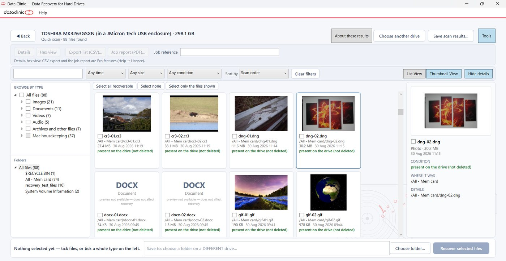

Products
Data recovery software, from a data recovery lab
Choose by what you've lost it from. Every program scans and previews for free, never writes to the drive it's recovering, and tells you honestly when a job needs a lab instead.

Flagship · from £39.99
Recovery for Hard Drives
Deleted, formatted and lost files from hard drives, SSDs and USB sticks — with Ask Rex AI, health checks and drive imaging.
Explore →
Free
Memory Card Recovery
Deleted photos and videos from SD and microSD cards — free, no registration, with previews before you save.
Explore →🧭
Not sure which? Memory cards from cameras and phones → Memory Card Recovery (free). Hard drives, SSDs, USB sticks and Mac drives → Recovery for Hard Drives. A drive that clicks, isn't detected or shows 0 MB is a physical fault — no software can fix it.